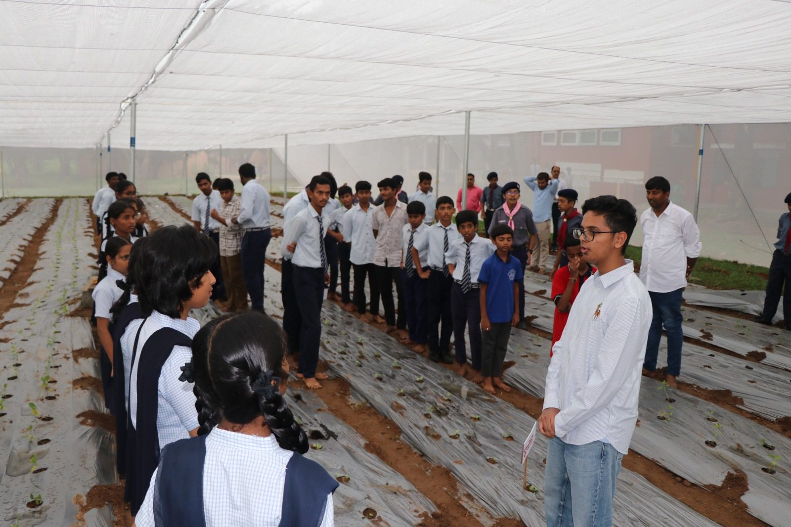
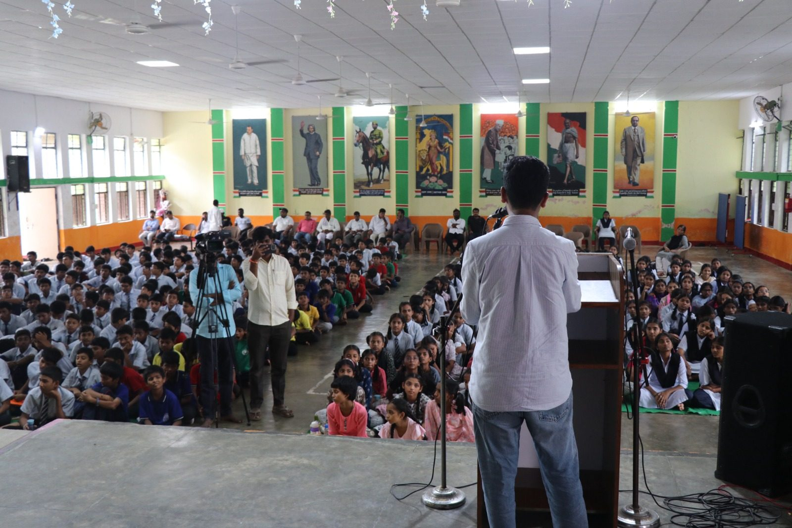
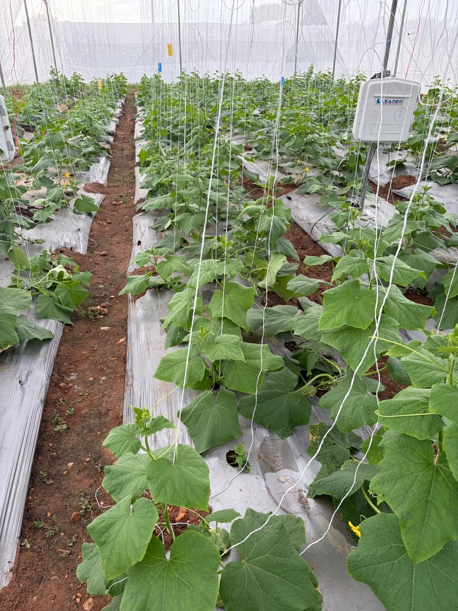
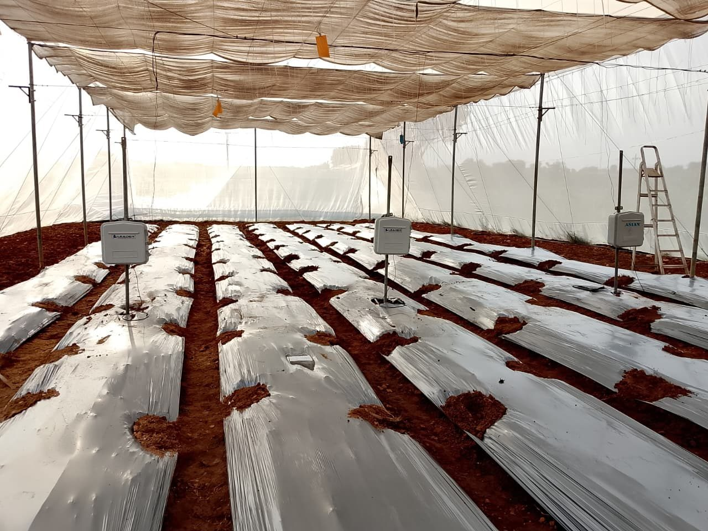
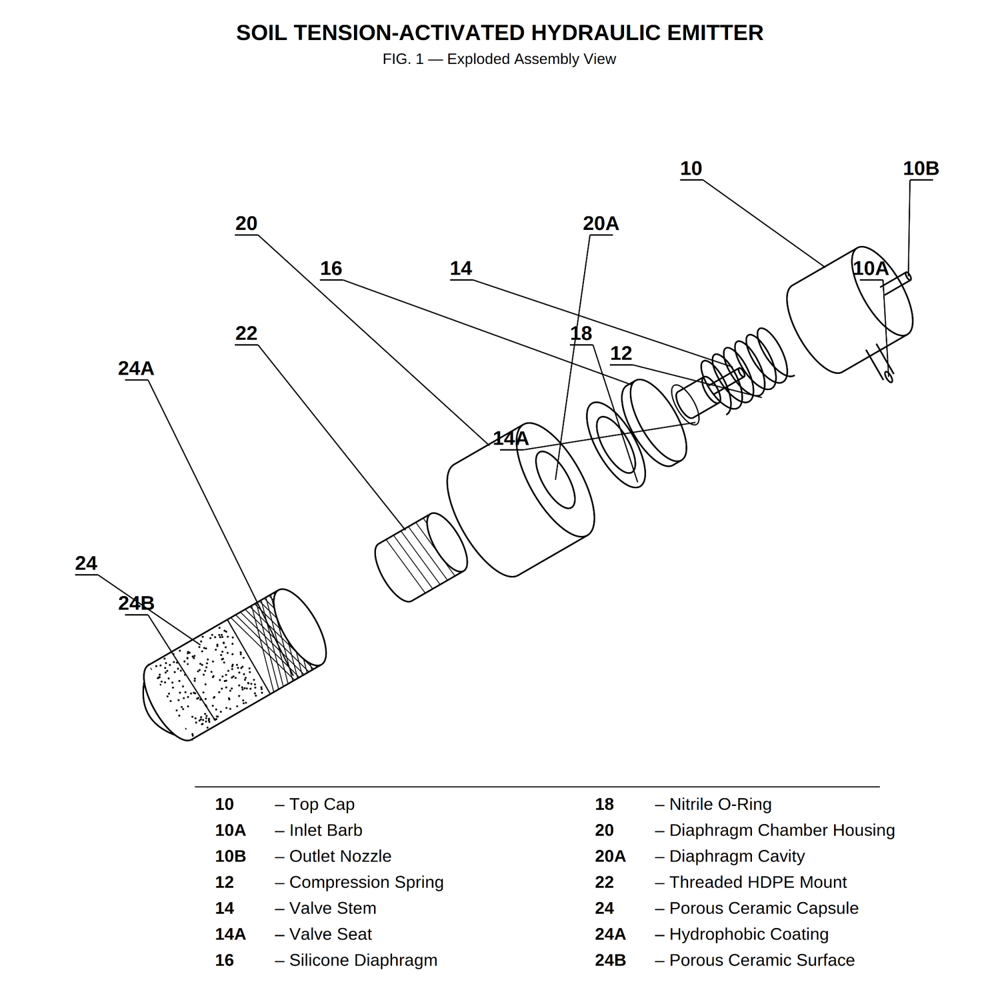

Class 12 student at Oakridge International School, Hyderabad. I work on helping small farmers in Telangana use less water.

A smart greenhouse at a government school, teaching water-efficient farming.
Offline reinforcement learning that schedules irrigation.
A soil tension-activated emitter that waters with no electronics.
A crop price predictor, a sign-language prototype, and volunteering with CGR India.
I got interested in this because many small and marginal farmers in Telangana flood their fields on a fixed schedule, and a lot of that water never reaches the roots.
I started by collecting data with soil-moisture sensors. That led to PANI, my research on using offline reinforcement learning to decide when and how much to water, and to a provisional patent for a watering device that works without electronics. Project Paani came later, as a way to teach students these ideas in a school greenhouse.
Away from irrigation I've built a crop-price predictor and a sign-language-to-speech prototype, and I volunteer with CGR India on sustainable agriculture. The PANI research is done only by me, with guidance from Prof. Pradeep Varakantham of Singapore Management University.
A smart greenhouse on a government school campus, where students learn water-efficient and organic farming by doing it. I founded it with the help of the Vivekananda Institute of Human Excellence, and the first one opened in September 2026 at Jawahar Navodaya Vidyalaya, Palair.
पानी
TV9 Telugu covered the opening of the first Project Paani greenhouse in its news roundup on 14 September 2026. The report is in Telugu and shows the school, the ribbon cutting, and students inside the greenhouse.
At Jawahar Navodaya Vidyalaya in Palair, Kusumanchi mandal, Khammam district, Daksh Soodini, a Class 12 student at Oakridge International School, Hyderabad, introduced Project Paani in front of the school's teachers and students.
Driven by an interest in water conservation and smart technology, Daksh had earlier done research on smart irrigation, an intelligent irrigation system. He has now designed a smart greenhouse.
He explained that it is a platform where agriculture, technology, data and AI can all be learned in one place.
On this occasion, several people congratulated Daksh for explaining the technology.
The farmers I studied for my research mostly water by habit, because nobody showed them another way. With Project Paani I wanted to start earlier, with students.
If students can see how much water a plant actually uses, it makes sense to them to water only when the plant needs it. That's the habit I hope they take home.
I founded Project Paani with the help of the Vivekananda Institute of Human Excellence (VIHE), Khammam. The first greenhouse opened in September 2026 at Jawahar Navodaya Vidyalaya in Palair, a government school in Khammam district, Telangana.
Students work in it directly. They learn how to grow crops with very little water, get more out of a small space, look after plants, farm organically, and use modern farming tools.
The vegetables grown there are meant for the students' own meals at the school, so the project can partly sustain itself. I hope the coverage helps bring Project Paani to more schools.

More than ten newspapers reported on the opening, along with several news channels. Three of the clippings are below, all from 14 September 2026. Open any of them to read it at full size.
Can an offline reinforcement-learning agent, trained with Implicit Q-Learning, schedule irrigation as well as a human, without ever taking a risky action on a real crop?
I'm working on this with guidance from Prof. Pradeep Varakantham of Singapore Management University.

Small and marginal farmers in Telangana (those with less than 2 hectares) mostly irrigate by instinct. They flood their fields on a fixed schedule, whatever the plant, the weather or the soil needs.
That wastes water, damages the soil, causes waterlogging, and often lowers yields. Watering more to help the crop often ends up hurting it.
I wanted to know whether a learned scheduling policy could beat habit, and whether it could be trained safely, without experimenting on a real season's crop.
Normal (online) reinforcement learning learns by trial and error, so it has to try bad actions to find out they're bad. On a real crop, a season of bad watering decisions could ruin the harvest.
So PANI uses offline RL. The agent learns only from a fixed dataset of simulator episodes and real field logs, and never experiments on a live plant. The problem with basic offline methods is that they can overestimate actions that never appear in the data.
Implicit Q-Learning avoids this because it never evaluates actions that aren't in the dataset, which makes it stable to train on logged data. That matters when a mistake could cost a farmer a season.
I'm comparing the offline-RL policy against ETc-threshold and fixed-schedule baselines in a greenhouse study. The numbers below are targets, not results yet.

The simulator is only useful if it matches real soil. Each sensor is calibrated to the soil texture and crop of its plot, and its logs are used to check the simulator and the learned policy.
A soil tension-activated hydraulic emitter with a spring-tunable, crop-specific threshold. It opens when the soil dries out and closes when it's wet again, with no electronics, controller or power.

Drip irrigation is usually controlled by timers or electronic sensors. A timer waters on a fixed schedule whatever the weather. Sensor systems cost money, need power, and can be hard for a small farmer to maintain and repair in the field.
My emitter doesn't need a controller. A porous ceramic capsule buried in the root zone is in hydraulic contact with the soil. As the soil dries and the plant transpires, soil water tension rises, and that tension pulls on a sealed water column inside the device. The reduced pressure draws a silicone diaphragm downward, unseating a spring-loaded valve, and water flows. As the soil rewets, tension falls, the spring closes the valve, and flow stops.
The threshold is set mechanically by one interchangeable compression spring. Swapping in a different spring rate raises or lowers the soil tension needed to open the valve, so the same device can be calibrated to the water demand of a specific crop.
| Ref | Component | Specification | Function |
|---|---|---|---|
| 10 | Top cap | Moulded or 3D-printed PETG | Carries the inlet barb 10A for supply tubing and the outlet nozzle 10B; forms the valve seat |
| 10B | Outlet nozzle | ≈ 0.8 mm bore | Discharges irrigation water to the root zone when the valve is open |
| 12 | Compression spring | Stainless steel · 0.3-0.5 N/mm | Holds the valve closed by default; its rate sets the tension threshold and is interchangeable per crop |
| 14 | Valve stem & head | Machinable polymer | Transmits diaphragm deflection to the valve head 14A, which seats against the outlet port |
| 16 | Silicone diaphragm | Food-grade, Shore 20A, 0.5 mm | The movable wall between the sealed sensing circuit and the dry mechanism above it |
| 18 | Nitrile O-ring | Water-safe grade | Seals the diaphragm at its periphery, isolating the flow path from the sensing circuit |
| 20 | Diaphragm housing | PETG · cavity ≈ 22 mm × 8 mm | Contains the diaphragm cavity 20A, the upper terminus of the sealed water column |
| 22 | Threaded mount | HDPE rod stock ≈ 25 mm | Mechanical and hydraulic junction to the capsule; unthreads for spring interchange |
| 24 | Porous ceramic capsule | 50 × 20 mm · 0.5-1.0 µm pore | Buried sensing element in continuous hydraulic communication with soil water |
| 24A | Hydrophobic band | Applied coating, upper region | Restricts exchange to the lower surface 24B, confining sensing to root depth |
The diaphragm and its O-ring keep the two circuits apart throughout. Supply water travels only from the inlet barb, past the valve head, and out of the nozzle. It never reaches the sensing side of the diaphragm, so the device responds only to the soil, not to the water it releases.
Two coding projects, and the environmental NGO I volunteer with.
I built a website to predict crop prices from agricultural market data, so a farmer could decide when to sell. The first model produced a graph where a crop's predicted price spiked one day and collapsed the next, with nothing in the records to explain the swing.
My first instinct was to make the algorithm more complex, but the real problem was the data. It had gaps, inconsistent reporting intervals, and too few reliable observations for some crops. I tried smoothing the abrupt jumps, changing the variables the model considered, and narrowing predictions to crops with fuller histories. Each fix corrected one distortion and revealed another.
The model still isn't perfect.
The idea started in Rajapet, my native village in Telangana, during door-to-door outreach. I greeted a man who didn't respond. He was deaf, and the people around him communicated in basic gestures. I left thinking about how much a person can have to say, and how little gets across without a shared language.
After studying computer-vision models in Brown's "Using AI to Make AI" course, I built a prototype: using an American Sign Language alphabet dataset, it classifies hand shapes and turns the detected letters into speech. Then I started noticing its problems. It needed a laptop, it was sensitive to lighting, background and hand position, it only worked in one direction, and an ASL alphabet classifier wasn't actually suited to the language or daily life of the man who inspired it.
So I simplified the path from recognition to speech and sketched a concept for pairing the program with camera-equipped glasses, so it could move with the user instead of staying tied to a desk. With two teammates I developed the idea for Negotium, my school's entrepreneurship competition, and we reached the final round.
CGR India is an environmental NGO in Hyderabad that works on sustainable agriculture, water conservation and rural livelihoods across Telangana. It is listed on the NSE Social Stock Exchange.
I got involved because I'm interested in farming technology and water conservation. I attend their events, follow their research, and have done some web development work on their website. Seeing their work on the ground has helped me understand what small farmers actually need.